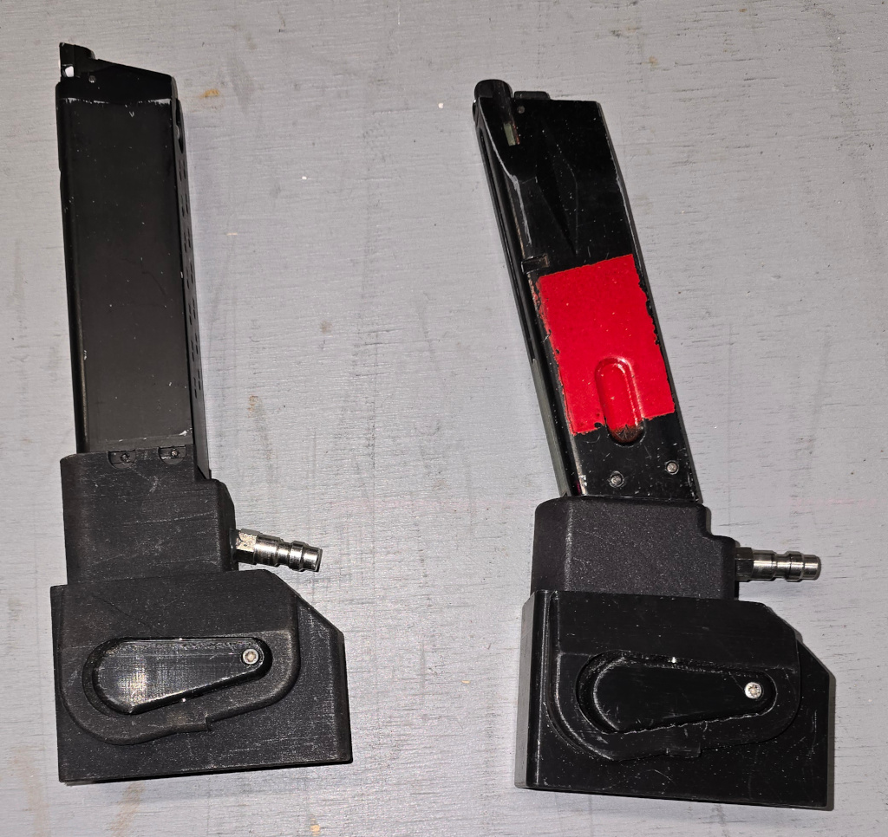

Q-Prop Creations
HPA for GBB Pistol
The classic solution mounting an M4 magazine under the grip of a GBB pistol and adding an HPA line.
I prototyped this with my Ender3 printer but the part did not hold pressure. The final parts are made to order in China, printed in Nylon.
These two are for a G&G GTP9/SMC9 and a TM spec M9. I tried to do one for a TM MK23, but didn't get the air seal right.
